Max Kachinkin · Tech & Team Lead, Drinkit Mobile
Max Kachinkin
Tech lead & Team lead · Drinkit Mobile
// Dodo Engineering
By the numbers.
63k
employees
365
in tech
26
countries
Drinkit.
Specialty coffee from Dodo Brands.
// When I say "the app", this is the one.
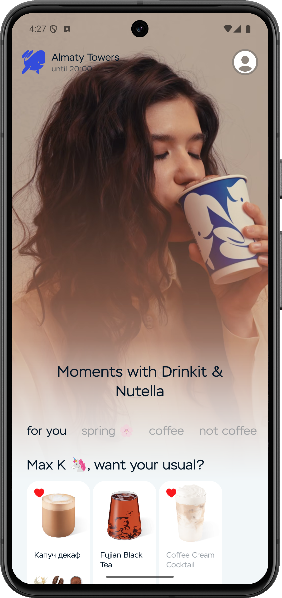
// part 01
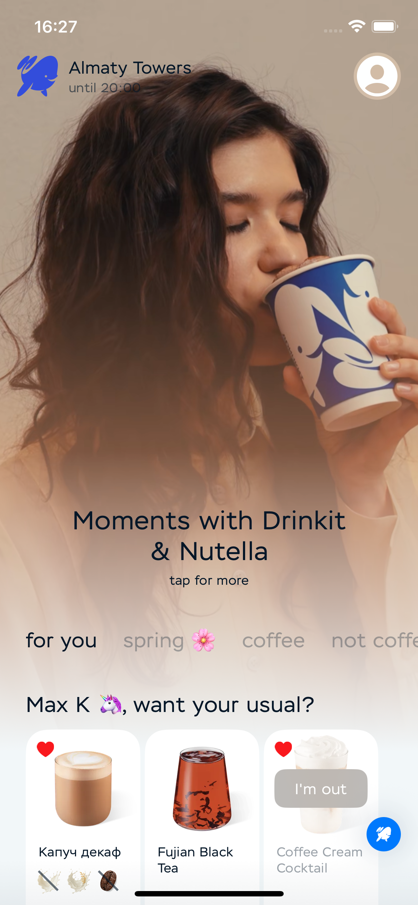
"Spot the difference."
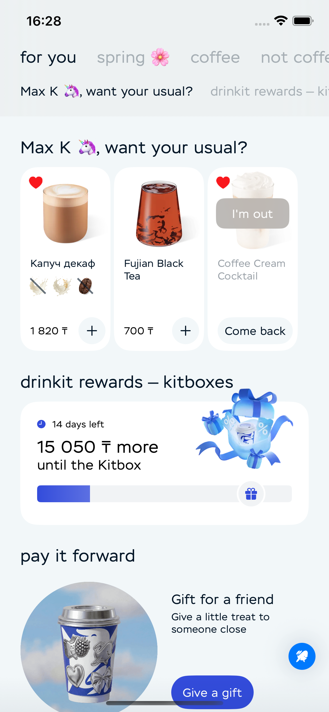
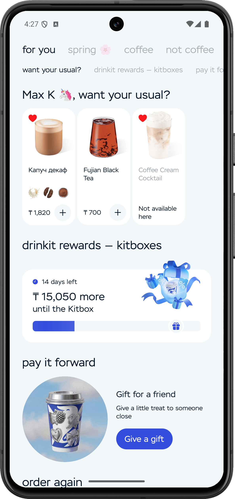
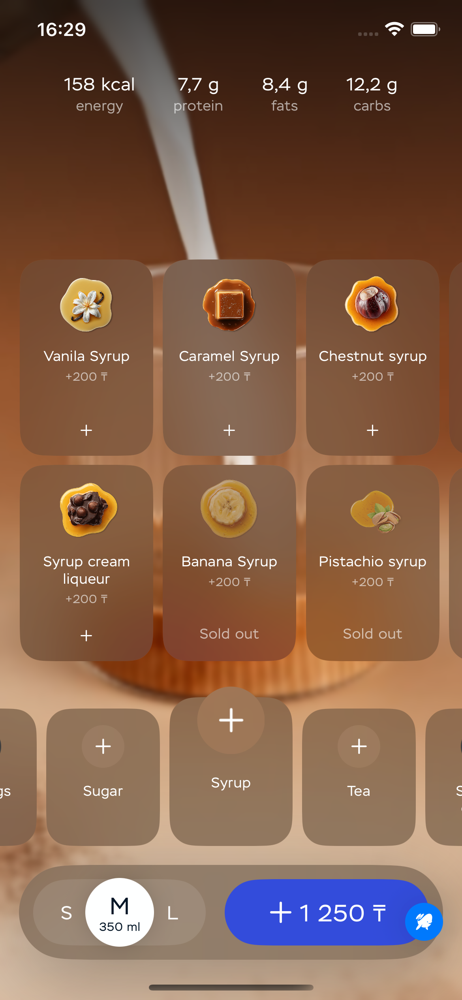
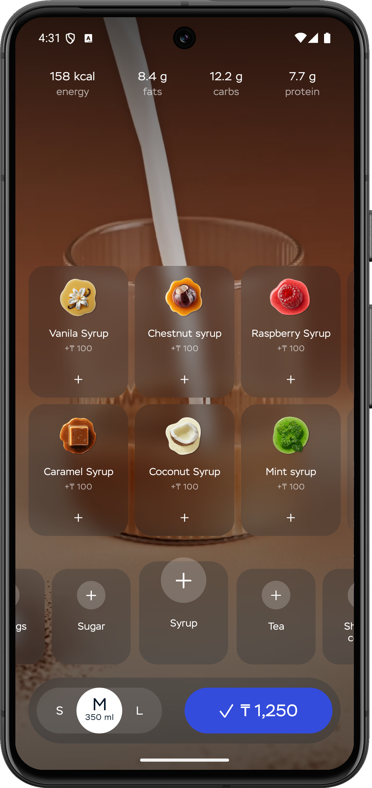
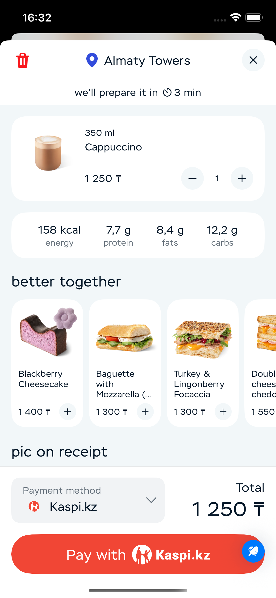
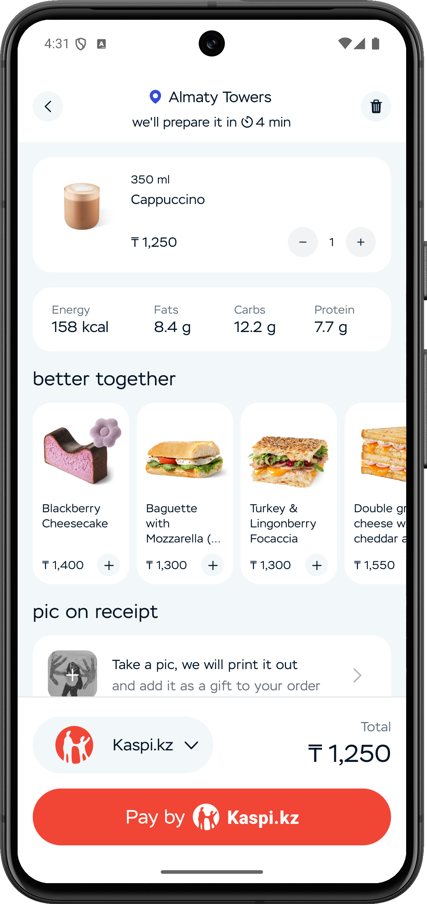
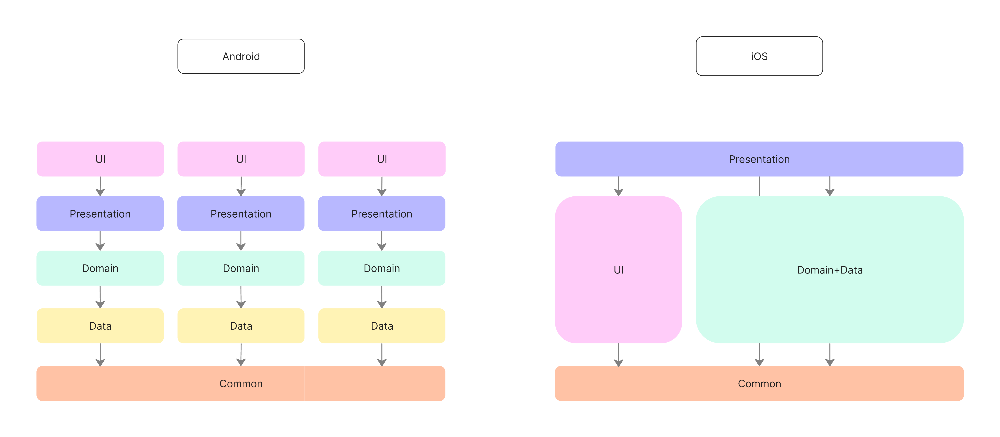
// part 02
// part 03
customer · #drinkit-feedback
today, 14:32
«А почему у моей подруги комбо доступно,
а у меня на айфоне нет? Что за несправедливость?!»
// android — Kotlin (live)
fun pickSlotProduct(slot: Slot, alreadyPicked: Set<String>): String { val default = slot.products.firstOrNull { it.id == slot.defaultProductId } if (default != null && !default.isInStop && default.id !in alreadyPicked) return default.id val fresh = slot.products.firstOrNull { !it.isInStop && it.id !in alreadyPicked } if (fresh != null) return fresh.id return slot.products.firstOrNull { !it.isInStop }?.id ?: slot.products.first().id }
// ios — Swift (also live)
func pickSlotProduct(slot: Slot, alreadyPicked: Set<String>) -> String { if let d = slot.products.first(where: { $0.id == slot.defaultProductId }), !d.isInStop { return d.id } if let fresh = slot.products.first(where: { !$0.isInStop }) { return fresh.id } return slot.products.first!.id }
// android — Kotlin (live)
fun pickSlotProduct(slot: Slot, alreadyPicked: Set<String>): String { val default = slot.products.firstOrNull { it.id == slot.defaultProductId } if (default != null && !default.isInStop && default.id !in alreadyPicked) return default.id val fresh = slot.products.firstOrNull { !it.isInStop && it.id !in alreadyPicked } if (fresh != null) return fresh.id return slot.products.firstOrNull { !it.isInStop }?.id ?: slot.products.first().id }
// ios — Swift (also live)missing both dedup checks ↓
func pickSlotProduct(slot: Slot, alreadyPicked: Set<String>) -> String { if let d = slot.products.first(where: { $0.id == slot.defaultProductId }), !d.isInStop /* no `!alreadyPicked.contains(d.id)` */ { return d.id } if let fresh = slot.products.first(where: { !$0.isInStop /* no dedup */ }) { return fresh.id } return slot.products.first!.id }
// part 04
kotlinlang.org / getting-started
Write once, run on Android & iOS. Share business logic, keep UI native.
// commonMain fun greet() = "Hello, multiplatform!"
Step 1 · New project · Step 2 · Add shared module · Step 3 · Done.
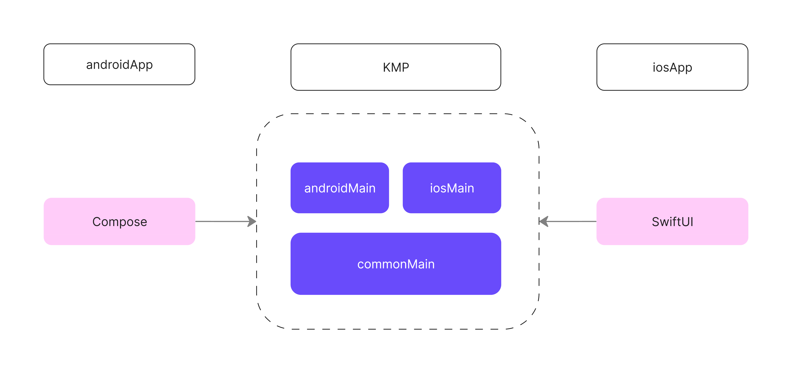
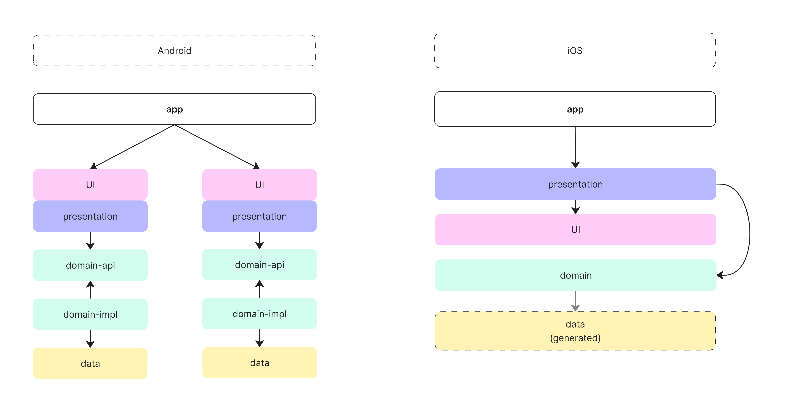
android-app-sampels/aisuggestions/domain-impl/.../DrinkitLabApi.kt
interface DrinkitLabApi { @GET("api/v1/GetDrinkitLab") suspend fun getDrinkitLab( @Query("countryId") countryId: Int, @Query("unitId") unitId: String, ): DrinkitLabDto }
Source of truth: generated Kotlin · committed to repo.
ios-app-samples/DrinkitLab-domain/DrinkitLabService.swift
func getDrinkitLab(unitId: String) async throws -> DTO.DrinkitLab_DrinkitLabDto { try await makeNetworkRequest { try await api.authorized.getApiV1GetDrinkitLab( query: .init(unitId: unitId) ) } mapResponse: { response in try response.ok.body.json } }
Source of truth: JSON spec · Swift regenerated on every build.
Different types. Different middleware. Different cancellation model.
// android
// ios
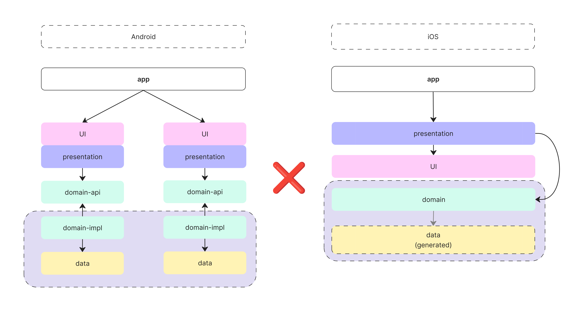
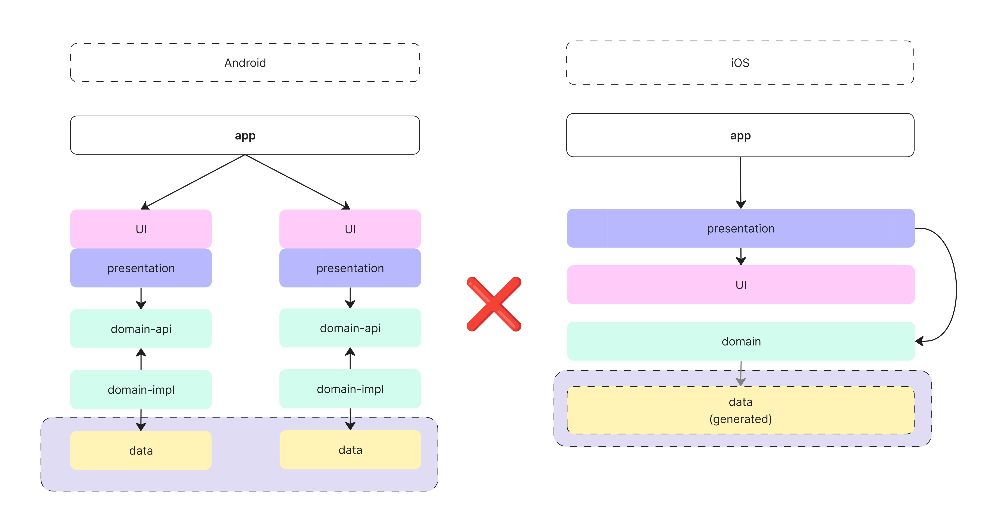
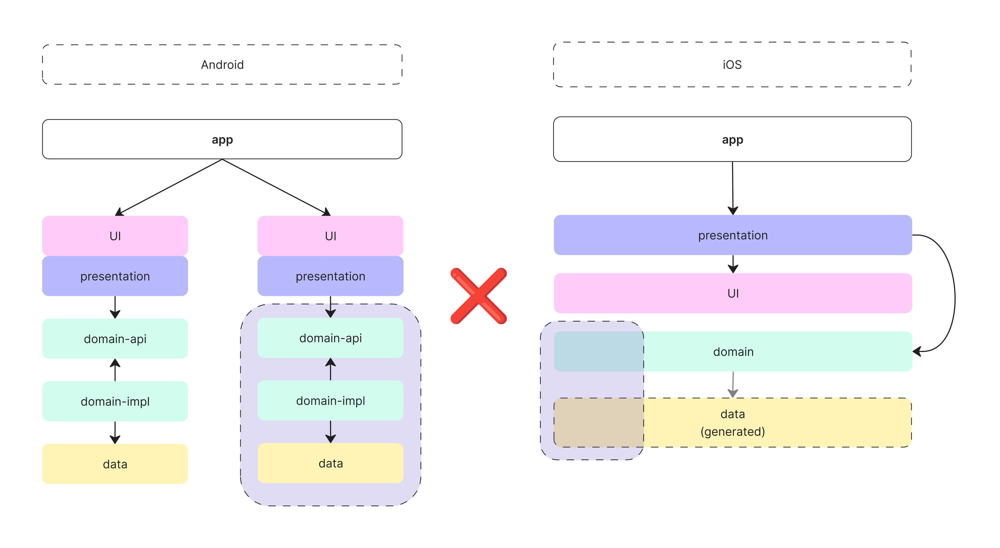
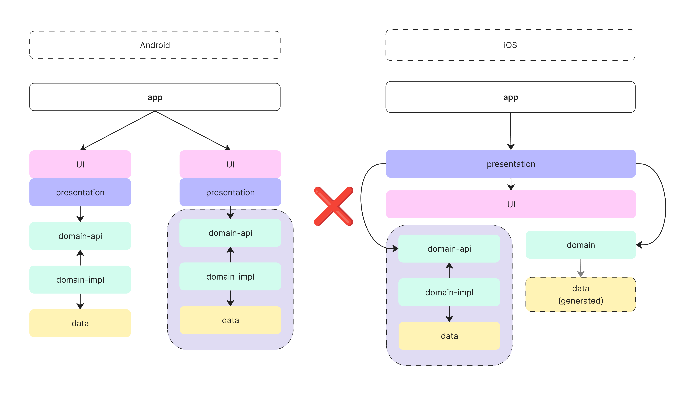
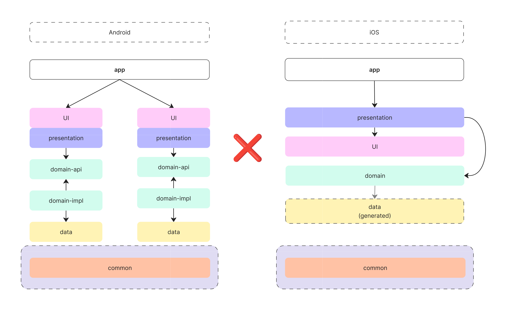
// part 05
// android — Kotlin (live)
fun pickSlotProduct(slot: Slot, alreadyPicked: Set<String>): String { val default = slot.products.firstOrNull { it.id == slot.defaultProductId } if (default != null && !default.isInStop && default.id !in alreadyPicked) return default.id val fresh = slot.products.firstOrNull { !it.isInStop && it.id !in alreadyPicked } if (fresh != null) return fresh.id return slot.products.firstOrNull { !it.isInStop }?.id ?: slot.products.first().id }
// ios — Swift (also live)missing both dedup checks ↓
func pickSlotProduct(slot: Slot, alreadyPicked: Set<String>) -> String { if let d = slot.products.first(where: { $0.id == slot.defaultProductId }), !d.isInStop /* no `!alreadyPicked.contains(d.id)` */ { return d.id } if let fresh = slot.products.first(where: { !$0.isInStop /* no dedup */ }) { return fresh.id } return slot.products.first!.id }
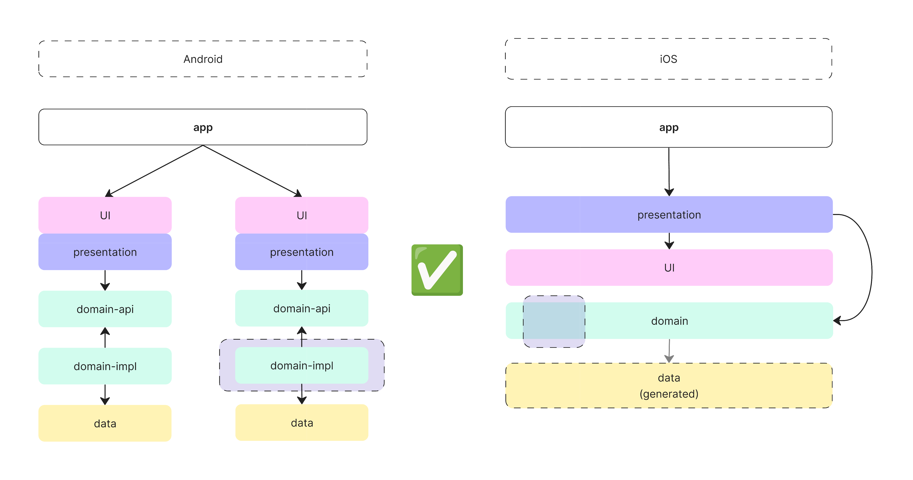
// real feature
Combo builder.
Pick a drink. Pick a food.
Skip what's out of stock.
Honour the cross-slot dedup rule.
Compute the right price.
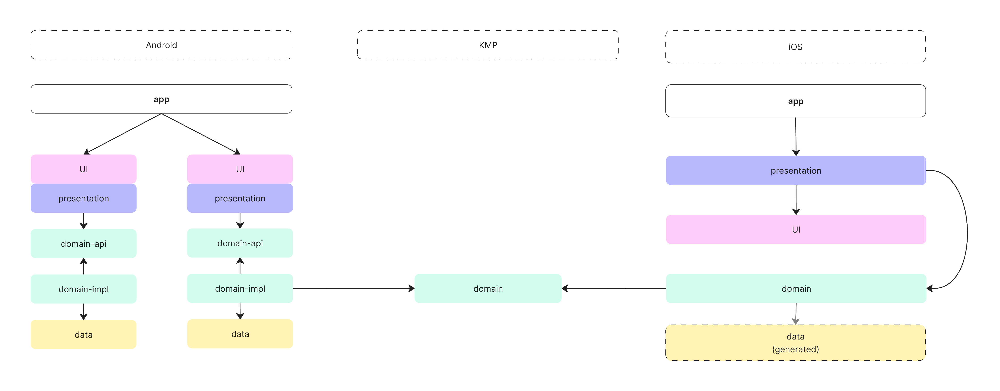
combo/src/commonMain/.../ComboResolver.kt
// Inputs in. Result out. No platform deps. fun resolveCombo( template: ComboTemplate, menu: Menu, ): ComboResolution
One pure function. Deterministic. No IO.
// android
drinkit-android/feature/combo/build.gradle.kts
dependencies { implementation("io.dodobrands.kmp:combo:1.0.0") }
…call site
val result = resolveCombo(template, menu)
// ios
drinkit-ios/Package.swift
.package(name: "DodoKMP", path: "../kmp")
…call site
let result = ComboResolverKt.resolveCombo(template: template, menu: menu)
// part 06
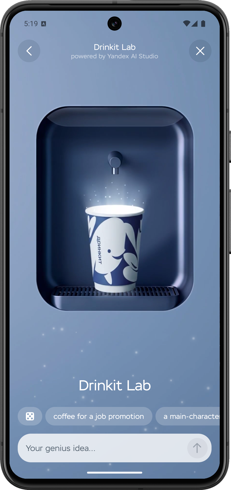
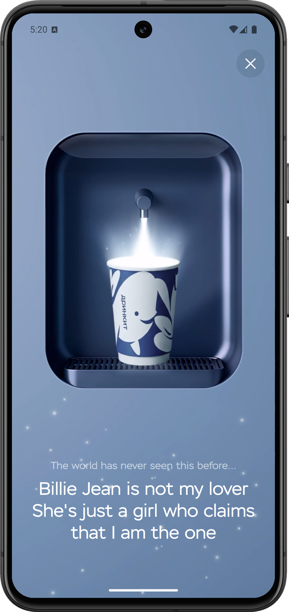
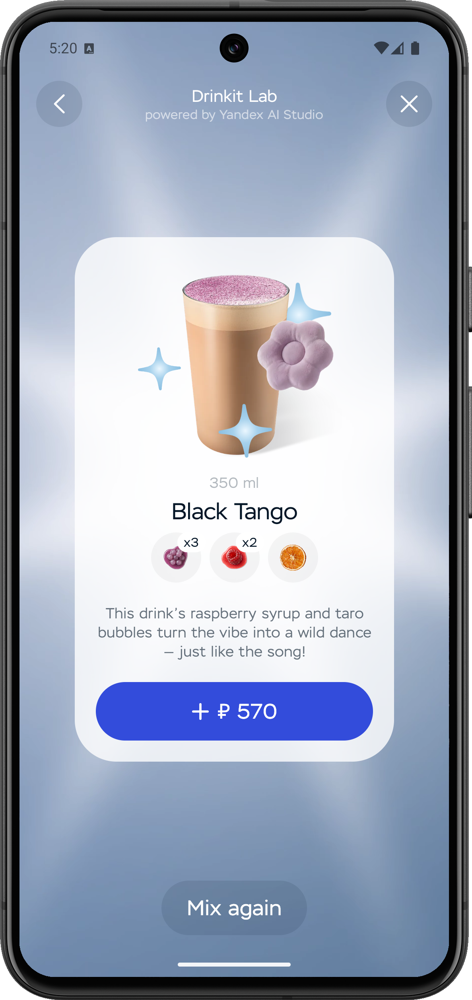
// prompt → generating → result
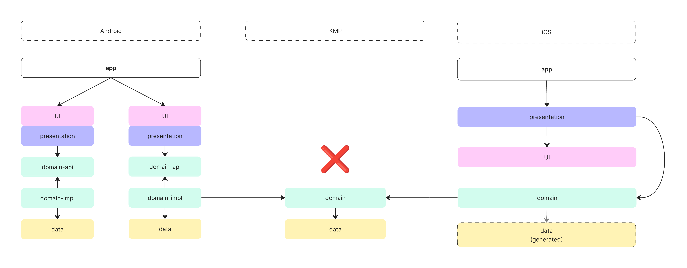
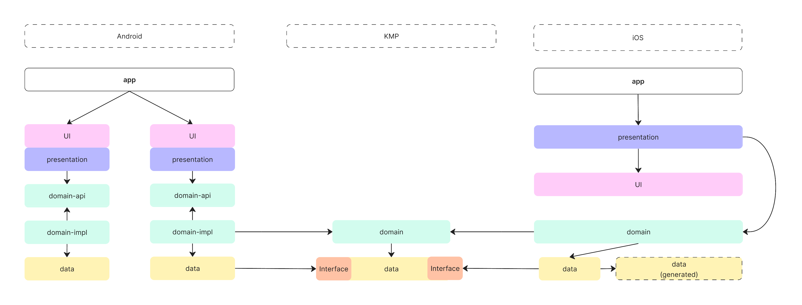
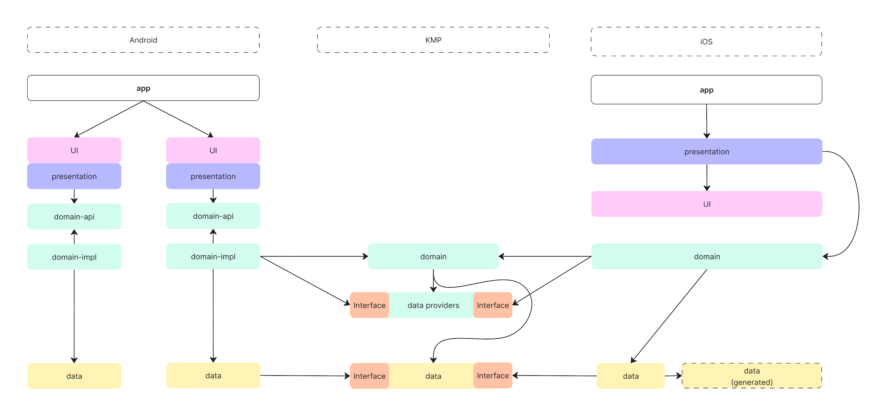
// part 07
core/src/commonMain/.../transport/HttpTransport.kt
interface HttpTransport { fun execute( request: TransportRequest, onSuccess: (TransportResponse) -> Unit, onFailure: (Throwable) -> Unit, ): Cancellable companion object { const val PLACEHOLDER_BASE_URL: String = "https://ai-proxy.drinkit.internal" } } fun interface Cancellable { fun cancel() }
core/src/commonMain/.../transport/TransportRequest.kt
data class TransportRequest( val path: String, // starts with "/" val query: String?, // already percent-encoded val method: String, // "GET", "POST", ... val headers: Map<String, List<String>>, val body: ByteArray?, )
No URL. The host owns where it goes.
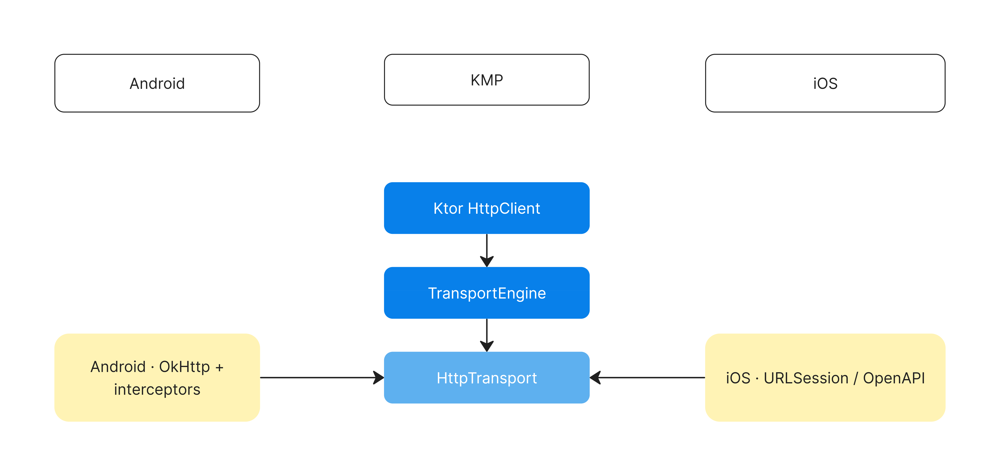
core/src/androidMain/.../transport/OkHttpTransport.kt
class OkHttpTransport( private val client: OkHttpClient, ) : HttpTransport { override fun execute( request: TransportRequest, onSuccess: (TransportResponse) -> Unit, onFailure: (Throwable) -> Unit, ): Cancellable { val call = client.newCall(buildOkRequest(request)) call.enqueue(object : Callback { override fun onFailure(call: Call, e: IOException) = onFailure(e) override fun onResponse(call: Call, response: Response) { response.use { r -> onSuccess(TransportResponse(r.code, r.headers.toMultimap(), r.body?.bytes() ?: ByteArray(0))) } } }) return Cancellable { call.cancel() } } }
core/src/androidMain/.../transport/OkHttpTransport.kt
class OkHttpTransport( private val client: OkHttpClient, ) : HttpTransport { override fun execute( request: TransportRequest, onSuccess: (TransportResponse) -> Unit, onFailure: (Throwable) -> Unit, ): Cancellable { val call = client.newCall(buildOkRequest(request)) call.enqueue(object : Callback { override fun onFailure(call: Call, e: IOException) = onFailure(e) override fun onResponse(call: Call, response: Response) { response.use { r -> onSuccess(TransportResponse(r.code, r.headers.toMultimap(), r.body?.bytes() ?: ByteArray(0))) } } }) return Cancellable { call.cancel() } } }
core/src/androidMain/.../transport/OkHttpTransport.kt
class OkHttpTransport( private val client: OkHttpClient, ) : HttpTransport { override fun execute( request: TransportRequest, onSuccess: (TransportResponse) -> Unit, onFailure: (Throwable) -> Unit, ): Cancellable { val call = client.newCall(buildOkRequest(request)) call.enqueue(object : Callback { override fun onFailure(call: Call, e: IOException) = onFailure(e) override fun onResponse(call: Call, response: Response) { response.use { r -> onSuccess(TransportResponse(r.code, r.headers.toMultimap(), r.body?.bytes() ?: ByteArray(0))) } } }) return Cancellable { call.cancel() } } }
core/src/androidMain/.../transport/OkHttpTransport.kt
class OkHttpTransport( private val client: OkHttpClient, ) : HttpTransport { override fun execute( request: TransportRequest, onSuccess: (TransportResponse) -> Unit, onFailure: (Throwable) -> Unit, ): Cancellable { val call = client.newCall(buildOkRequest(request)) call.enqueue(object : Callback { override fun onFailure(call: Call, e: IOException) = onFailure(e) override fun onResponse(call: Call, response: Response) { response.use { r -> onSuccess(TransportResponse(r.code, r.headers.toMultimap(), r.body?.bytes() ?: ByteArray(0))) } } }) return Cancellable { call.cancel() } } }
sampleIos/SampleIos/Network/SampleHttpTransport.swift
final class SampleHttpTransport: HttpTransport { func execute( request: TransportRequest, onSuccess: @escaping (TransportResponse) -> Void, onFailure: @escaping (KotlinThrowable) -> Void ) -> any Cancellable { let task = Task { // build URLRequest from baseURL + request.path + request.query let (data, response) = try await URLSession.shared.data(for: urlRequest) guard let http = response as? HTTPURLResponse else { onFailure(...); return } onSuccess(TransportResponse( statusCode: Int32(http.statusCode), headers: parsedHeaders, body: data.toKotlinByteArray() )) } return SampleCancellableTask(task: task) } }
sampleIos/SampleIos/Network/SampleHttpTransport.swift
final class SampleHttpTransport: HttpTransport { func execute( request: TransportRequest, onSuccess: @escaping (TransportResponse) -> Void, onFailure: @escaping (KotlinThrowable) -> Void ) -> any Cancellable { let task = Task { // build URLRequest from baseURL + request.path + request.query let (data, response) = try await URLSession.shared.data(for: urlRequest) guard let http = response as? HTTPURLResponse else { onFailure(...); return } onSuccess(TransportResponse( statusCode: Int32(http.statusCode), headers: parsedHeaders, body: data.toKotlinByteArray() )) } return SampleCancellableTask(task: task) } }
sampleIos/SampleIos/Network/SampleHttpTransport.swift
final class SampleHttpTransport: HttpTransport { func execute( request: TransportRequest, onSuccess: @escaping (TransportResponse) -> Void, onFailure: @escaping (KotlinThrowable) -> Void ) -> any Cancellable { let task = Task { // build URLRequest from baseURL + request.path + request.query let (data, response) = try await URLSession.shared.data(for: urlRequest) guard let http = response as? HTTPURLResponse else { onFailure(...); return } onSuccess(TransportResponse( statusCode: Int32(http.statusCode), headers: parsedHeaders, body: data.toKotlinByteArray() )) } return SampleCancellableTask(task: task) } }
sampleIos/SampleIos/Network/SampleHttpTransport.swift
final class SampleHttpTransport: HttpTransport { func execute( request: TransportRequest, onSuccess: @escaping (TransportResponse) -> Void, onFailure: @escaping (KotlinThrowable) -> Void ) -> any Cancellable { let task = Task { // build URLRequest from baseURL + request.path + request.query let (data, response) = try await URLSession.shared.data(for: urlRequest) guard let http = response as? HTTPURLResponse else { onFailure(...); return } onSuccess(TransportResponse( statusCode: Int32(http.statusCode), headers: parsedHeaders, body: data.toKotlinByteArray() )) } return SampleCancellableTask(task: task) } }
// part 08
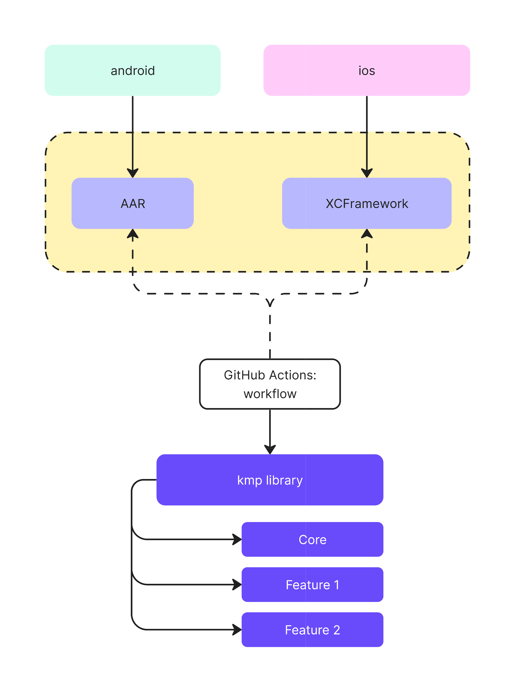
// part 09
// company
One mental model. One context. No cross-team handoffs. Better consistency than two engineers running in parallel.
// engineer
Your skill range doubles. You become more valuable — especially if you ever want to interview at a western big-tech.
// part 10
// android
+1 MB
// ios
+4 MB
We were ready for worse.
"Great."
"Actually great."
Max Kachinkin
Dodo Engineering · Drinkit Mobile